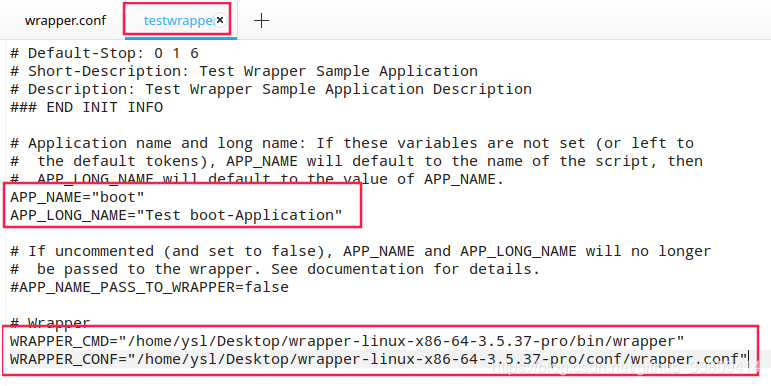
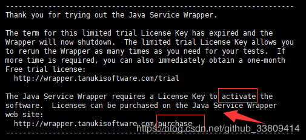

<!DOCTYPE html><html lang="en"><head><meta name="generator" content="Hexo 3.9.0"><meta charset="utf-8"><meta name="keywords" content="个人博客, 松林羊, ysl, songlinsheep, andus, blog, 个人站点, 个人网站"><meta name="description" content="松林羊的个人网站，用于记录，分享。欢迎交流^-^"><meta name="viewport" content="width=device-width,initial-scale=1,maximum-scale=1"><title> SpringBoot jar包作为Wrapper服务启动-Linux | 松林羊</title><link rel="shortcut icon" href="/smile.ico"><link rel="stylesheet" href="/css/style.css"><link rel="stylesheet" href="/fancybox/jquery.fancybox.min.css"><script src="/js/pace.min.js"></script><script>!function(e,t,o,c,i,a,n){e.DaoVoiceObject=i,e[i]=e[i]||function(){(e[i].q=e[i].q||[]).push(arguments)},e[i].l=1*new Date,a=t.createElement(o),n=t.getElementsByTagName(o)[0],a.async=1,a.src=c,a.charset="utf-8",n.parentNode.insertBefore(a,n)}(window,document,"script",("https:"==document.location.protocol?"https:":"http:")+"//widget.daovoice.io/widget/0f81ff2f.js","daovoice"),daovoice("init",{app_id:"1559132c"}),daovoice("update")</script></head></html><body><main class="content"><section class="outer"><article id="post-SpringBoot-jar包作为Wrapper服务启动-Linux" class="article article-type-post" itemscope itemprop="blogPost" data-scroll-reveal><div class="article-inner"><header class="article-header"><h1 class="article-title" itemprop="name"> SpringBoot jar包作为Wrapper服务启动-Linux</h1></header><div class="article-meta"> <a href="/2019/02/14/SpringBoot-jar包作为Wrapper服务启动-Linux/" class="article-date"><time datetime="2019-02-14T01:08:53.000Z" itemprop="datePublished">2019-02-14</time></a><div class="article-category"> <a class="article-category-link" href="/categories/Web开发/">Web开发</a></div> &emsp;<i class="fe fe-bar-chart"></i> <span class="post-count">1k</span>字 &emsp;<i class="fe fe-clock"></i> <span class="post-count">5</span>分钟</div><div class="tocbot"></div><div class="article-entry" itemprop="articleBody"><h3 id="引言"><a href="#引言" class="headerlink" title="引言"></a>引言</h3><p>同步Windows版本教程参考：<a href="http://www.andus.top/2019/02/14/SpringBoot-jar-作为Wrapper服务启动-Windows/">SpringBoot jar包作为Wrapper服务启动-Windows</a><br>此教程为Linux上将springboot jar作为服务启动, 版本：SpringBoot-2.1.2RELEASE。<br>该服务中web程序的context-path、port都会以springboot中配置的为准。</p><h3 id="步骤"><a href="#步骤" class="headerlink" title="步骤"></a>步骤</h3><ol><li><p><a href="https://wrapper.tanukisoftware.com/doc/english/download.jsp" target="_blank" rel="noopener">下载Java Service Wrapper</a>。目前最新版本为：3.5.37。选择自己对应的操作系统和位数，一般是Linux+x86 cpu。</p></li><li><p>修改conf/wrapper.conf文件，最好先备份</p><figure class="highlight plain"><table><tr><td class="gutter"><pre><span class="line">1</span><br><span class="line">2</span><br><span class="line">3</span><br><span class="line">4</span><br><span class="line">5</span><br><span class="line">6</span><br><span class="line">7</span><br><span class="line">8</span><br><span class="line">9</span><br><span class="line">10</span><br><span class="line">11</span><br><span class="line">12</span><br><span class="line">13</span><br><span class="line">14</span><br><span class="line">15</span><br><span class="line">16</span><br><span class="line">17</span><br><span class="line">18</span><br><span class="line">19</span><br><span class="line">20</span><br><span class="line">21</span><br><span class="line">22</span><br><span class="line">23</span><br><span class="line">24</span><br><span class="line">25</span><br><span class="line">26</span><br><span class="line">27</span><br><span class="line">28</span><br><span class="line">29</span><br><span class="line">30</span><br><span class="line">31</span><br><span class="line">32</span><br><span class="line">33</span><br><span class="line">34</span><br><span class="line">35</span><br><span class="line">36</span><br><span class="line">37</span><br><span class="line">38</span><br><span class="line">39</span><br><span class="line">40</span><br><span class="line">41</span><br><span class="line">42</span><br><span class="line">43</span><br><span class="line">44</span><br><span class="line">45</span><br><span class="line">46</span><br><span class="line">47</span><br><span class="line">48</span><br><span class="line">49</span><br><span class="line">50</span><br><span class="line">51</span><br><span class="line">52</span><br><span class="line">53</span><br><span class="line">54</span><br><span class="line">55</span><br><span class="line">56</span><br><span class="line">57</span><br><span class="line">58</span><br><span class="line">59</span><br><span class="line">60</span><br><span class="line">61</span><br><span class="line">62</span><br><span class="line">63</span><br><span class="line">64</span><br><span class="line">65</span><br><span class="line">66</span><br><span class="line">67</span><br><span class="line">68</span><br><span class="line">69</span><br><span class="line">70</span><br><span class="line">71</span><br><span class="line">72</span><br><span class="line">73</span><br><span class="line">74</span><br><span class="line">75</span><br><span class="line">76</span><br><span class="line">77</span><br><span class="line">78</span><br><span class="line">79</span><br><span class="line">80</span><br><span class="line">81</span><br><span class="line">82</span><br><span class="line">83</span><br><span class="line">84</span><br><span class="line">85</span><br><span class="line">86</span><br><span class="line">87</span><br><span class="line">88</span><br><span class="line">89</span><br><span class="line">90</span><br><span class="line">91</span><br><span class="line">92</span><br><span class="line">93</span><br><span class="line">94</span><br><span class="line">95</span><br><span class="line">96</span><br><span class="line">97</span><br><span class="line">98</span><br><span class="line">99</span><br><span class="line">100</span><br><span class="line">101</span><br><span class="line">102</span><br><span class="line">103</span><br><span class="line">104</span><br><span class="line">105</span><br><span class="line">106</span><br><span class="line">107</span><br><span class="line">108</span><br><span class="line">109</span><br><span class="line">110</span><br><span class="line">111</span><br><span class="line">112</span><br><span class="line">113</span><br><span class="line">114</span><br><span class="line">115</span><br><span class="line">116</span><br><span class="line">117</span><br><span class="line">118</span><br><span class="line">119</span><br><span class="line">120</span><br><span class="line">121</span><br><span class="line">122</span><br><span class="line">123</span><br><span class="line">124</span><br><span class="line">125</span><br><span class="line">126</span><br><span class="line">127</span><br><span class="line">128</span><br><span class="line">129</span><br><span class="line">130</span><br><span class="line">131</span><br><span class="line">132</span><br><span class="line">133</span><br><span class="line">134</span><br><span class="line">135</span><br><span class="line">136</span><br><span class="line">137</span><br><span class="line">138</span><br></pre></td><td class="code"><pre><span class="line">#encoding=UTF-8</span><br><span class="line"></span><br><span class="line">&lt;font color=red&gt;##不知道为啥，这句去掉就不能启动服务&lt;/font&gt;</span><br><span class="line">#include ../conf/wrapper-license.conf</span><br><span class="line"></span><br><span class="line">#Specify the language and locale which the Wrapper should use.</span><br><span class="line">#需要取消注释，否则会去找wrapperjni_zh.mo文件，但是../lang/中没有该文件</span><br><span class="line">&lt;font color=red&gt;wrapper.lang=en_US # en_US or ja_JP</span><br><span class="line">wrapper.lang.folder=../lang&lt;/font&gt;</span><br><span class="line"></span><br><span class="line">#Java Application</span><br><span class="line">set.JAVA_HOME=/usr/local/java/jdk1.8.0_191</span><br><span class="line">wrapper.java.command=%JAVA_HOME%/bin/java</span><br><span class="line"></span><br><span class="line">#Java Library Path (location of Wrapper.DLL or libwrapper.so)</span><br><span class="line">wrapper.java.library.path.1=../lib</span><br><span class="line"></span><br><span class="line">#Tell the Wrapper to log the full generated Java command line.</span><br><span class="line">#wrapper.java.command.loglevel=INFO</span><br><span class="line"></span><br><span class="line">#老版本写法</span><br><span class="line">#wrapper.java.mainclass=org.tanukisoftware.wrapper.WrapperStartStopApp</span><br><span class="line">&lt;font color=red&gt;wrapper.java.mainclass=org.tanukisoftware.wrapper.WrapperSimpleApp&lt;/font&gt;</span><br><span class="line"></span><br><span class="line">#Java Classpath (include wrapper.jar)  Add class path elements as needed starting from 1</span><br><span class="line">#自己的jar包路径</span><br><span class="line">&lt;font color=red&gt;wrapper.java.classpath.1=../lib/boot.jar</span><br><span class="line">wrapper.java.classpath.2=../lib/wrapper.jar&lt;/font&gt;</span><br><span class="line"></span><br><span class="line">#Java Bits.  On applicable platforms, tells the JVM to run in 32 or 64-bit mode.</span><br><span class="line">wrapper.java.additional.auto_bits=TRUE</span><br><span class="line"></span><br><span class="line">#Java Additional Parameters</span><br><span class="line">wrapper.java.additional.1=</span><br><span class="line"></span><br><span class="line">#Initial Java Heap Size (in MB)</span><br><span class="line">#wrapper.java.initmemory=3</span><br><span class="line"></span><br><span class="line">#Maximum Java Heap Size (in MB)</span><br><span class="line">#wrapper.java.maxmemory=64</span><br><span class="line"></span><br><span class="line">#Application parameters.  Add parameters as needed starting from 1</span><br><span class="line">&lt;font color=red&gt;wrapper.app.parameter.1=org.springframework.boot.loader.JarLauncher&lt;/font&gt;</span><br><span class="line">#如果代码包与依赖jar包分开打包也可以直接写main所在的入口类</span><br><span class="line">#wrapper.app.parameter.1=com.ysl.springboot.SpringbootApplication</span><br><span class="line"></span><br><span class="line">#Enables Debug output from the Wrapper.</span><br><span class="line">#wrapper.debug=TRUE</span><br><span class="line"></span><br><span class="line">#Format of output for the console.  (See docs for formats)</span><br><span class="line">#wrapper.console.format=PM</span><br><span class="line">wrapper.console.format=LPDTM</span><br><span class="line"></span><br><span class="line">#Log Level for console output.  (See docs for log levels)</span><br><span class="line">wrapper.console.loglevel=INFO</span><br><span class="line"></span><br><span class="line">#Log file to use for wrapper output logging.</span><br><span class="line">#wrapper.logfile=../logs/wrapper.log</span><br><span class="line">#wrapper 日志</span><br><span class="line">wrapper.logfile=../logs/boot_YYYYMMDD.log</span><br><span class="line">wrapper.logfile.rollmode=DATE</span><br><span class="line"></span><br><span class="line">#Format of output for the log file.  (See docs for formats)</span><br><span class="line">#wrapper.logfile.format=LPTM</span><br><span class="line">wrapper.logfile.format=LPDTM</span><br><span class="line"></span><br><span class="line">#Log Level for log file output.  (See docs for log levels)</span><br><span class="line">wrapper.logfile.loglevel=INFO</span><br><span class="line"></span><br><span class="line">#Maximum size that the log file will be allowed to grow to before</span><br><span class="line">#the log is rolled. Size is specified in bytes.  The default value</span><br><span class="line">#of 0, disables log rolling.  May abbreviate with the &apos;k&apos; (kb) or</span><br><span class="line">#&apos;m&apos; (mb) suffix.  For example: 10m = 10 megabytes.</span><br><span class="line">wrapper.logfile.maxsize=0</span><br><span class="line"></span><br><span class="line">#Maximum number of rolled log files which will be allowed before old</span><br><span class="line">#files are deleted.  The default value of 0 implies no limit.</span><br><span class="line">wrapper.logfile.maxfiles=0</span><br><span class="line"></span><br><span class="line">#Log Level for sys/event log output.  (See docs for log levels)</span><br><span class="line">wrapper.syslog.loglevel=NONE</span><br><span class="line"></span><br><span class="line">#Allow for the use of non-contiguous numbered properties</span><br><span class="line">wrapper.ignore_sequence_gaps=TRUE</span><br><span class="line"></span><br><span class="line">#Do not start if the pid file already exists.</span><br><span class="line">wrapper.pidfile.strict=TRUE</span><br><span class="line"></span><br><span class="line">#Title to use when running as a console  &lt;u&gt;app.name in bin/testwrapper&lt;/u&gt;</span><br><span class="line">&lt;font color=red&gt;wrapper.console.title=@app.long.name@&lt;/font&gt;</span><br><span class="line"></span><br><span class="line">#********************************************************************</span><br><span class="line">#Wrapper JVM Checks</span><br><span class="line">#********************************************************************</span><br><span class="line">#Detect DeadLocked Threads in the JVM. (Requires Standard Edition)</span><br><span class="line">wrapper.check.deadlock=TRUE</span><br><span class="line">wrapper.check.deadlock.interval=10</span><br><span class="line">wrapper.check.deadlock.action=RESTART</span><br><span class="line">wrapper.check.deadlock.output=FULL</span><br><span class="line"></span><br><span class="line">#Out Of Memory detection.</span><br><span class="line">#(Ignore output from dumping the configuration to the console.  This is only needed by the TestWrapper sample application.)</span><br><span class="line">wrapper.filter.trigger.999=wrapper.filter.trigger.*java.lang.OutOfMemoryError</span><br><span class="line">wrapper.filter.allow_wildcards.999=TRUE</span><br><span class="line">wrapper.filter.action.999=NONE</span><br><span class="line">#Ignore -verbose:class output to avoid false positives.</span><br><span class="line">wrapper.filter.trigger.1000=[Loaded java.lang.OutOfMemoryError</span><br><span class="line">wrapper.filter.action.1000=NONE</span><br><span class="line">#(Simple match)</span><br><span class="line">wrapper.filter.trigger.1001=java.lang.OutOfMemoryError</span><br><span class="line">#(Only match text in stack traces if -XX:+PrintClassHistogram is being used.)</span><br><span class="line">#wrapper.filter.trigger.1001=Exception in thread &quot;*&quot; java.lang.OutOfMemoryError</span><br><span class="line">#wrapper.filter.allow_wildcards.1001=TRUE</span><br><span class="line">wrapper.filter.action.1001=RESTART</span><br><span class="line">wrapper.filter.message.1001=The JVM has run out of memory.</span><br><span class="line"></span><br><span class="line">#Specify custom mail content</span><br><span class="line">wrapper.event.jvm_restart.email.body=The JVM was restarted.\n\nPlease check on its status.\n</span><br><span class="line"></span><br><span class="line">#Name of the service. </span><br><span class="line">&lt;font color=red&gt;wrapper.name=@app.name@&lt;/font&gt;</span><br><span class="line"></span><br><span class="line">#Display name of the service		 &lt;u&gt;app.long.name in bin/testwrapper&lt;/u&gt;</span><br><span class="line">&lt;font color=red&gt;wrapper.displayname=@app.long.name@&lt;/font&gt;</span><br><span class="line"></span><br><span class="line">#Description of the service</span><br><span class="line">&lt;font color=red&gt;wrapper.description=Test Wrapper boot-Application Description&lt;/font&gt;</span><br><span class="line"></span><br><span class="line">#Service dependencies.  Add dependencies as needed starting from 1</span><br><span class="line">wrapper.ntservice.dependency.1=</span><br><span class="line"></span><br><span class="line">#Mode in which the service is installed.  AUTO_START, DELAY_START or DEMAND_START</span><br><span class="line">wrapper.ntservice.starttype=AUTO_START</span><br><span class="line"></span><br><span class="line">#Allow the service to interact with the desktop (Windows NT/2000/XP only).</span><br><span class="line">wrapper.ntservice.interactive=FALSE</span><br><span class="line"></span><br><span class="line">wrapper.ping.timeout=120</span><br></pre></td></tr></table></figure></li><li><p>修改bin/testwrapper<br></p></li><li><p>在bin目录下执行<br>启动服务：<code>./testwrapper start</code><br>停止服务：<code>./testwrapper stop</code><br>重启服务：<code>./testwrapper restart</code></p></li></ol><h3 id="说在最后的话"><a href="#说在最后的话" class="headerlink" title="说在最后的话"></a>说在最后的话</h3><p><font color="red">服务不是免费的</font><br><br><br></p><blockquote><p>参考<br><a href="https://blog.csdn.net/myvernal/article/details/79104026" target="_blank" rel="noopener">https://blog.csdn.net/myvernal/article/details/79104026</a><br><a href="https://my.oschina.net/u/3866531/blog/1845669/" target="_blank" rel="noopener">https://my.oschina.net/u/3866531/blog/1845669/</a><br><a href="https://blog.csdn.net/sq287197314/article/details/82996012" target="_blank" rel="noopener">https://blog.csdn.net/sq287197314/article/details/82996012</a></p></blockquote></div><footer class="article-footer"><ul class="article-tag-list"><li class="article-tag-list-item"><a class="article-tag-list-link" href="/tags/SpringBoot/">SpringBoot</a></li><li class="article-tag-list-item"><a class="article-tag-list-link" href="/tags/Wrapper服务/">Wrapper服务</a></li></ul><div style="text-align:center;color:#ccc;font-size:14px;margin-top:10px"> ------------- 本文结束&nbsp;<i class="fe fe-smile"></i>&nbsp;感谢您的阅读 -------------</div></footer></div><nav class="article-nav"> <a href="/2019/02/14/Maven项目代码和jar包分开打包/" class="article-nav-link"><strong class="article-nav-caption">前一篇</strong><div class="article-nav-title"> Maven项目代码和jar包分开打包</div></a> <a href="/2019/02/14/SpringBoot-jar-作为Wrapper服务启动-Windows/" class="article-nav-link"><strong class="article-nav-caption">后一篇</strong><div class="article-nav-title">SpringBoot jar 作为Wrapper服务启动-Windows</div></a></nav><div class="comment_headling" style="margin-top:5rem"><font size="5"><i class="fe fe-comments"></i> 评论</font></div><div class="comment"></div><script src="https://cdn1.lncld.net/static/js/3.0.4/av-min.js"></script><script src="/js/Valine.min.js"></script><script type="text/javascript">GUEST_INFO=["nick","mail","link"],guest_info="nick,mail,link".split(",").filter(function(i){return-1<GUEST_INFO.indexOf(i)}),guest_info=0==guest_info.length?GUEST_INFO:guest_info,new Valine({av:AV,el:".comment",app_id:"fq4O7Xaf1cYDbADGellNEn6V-gzGzoHsz",app_key:"a626rNIHkVVk8tGBBCfaQjb9",placeholder:"记得留下你的昵称和邮箱...可以快速收到回复ヾﾉ≧∀≦)o",meta:guest_info,notify:!0,verify:!1,avatar:"monsterid",recordIP:!0,visitor:!1,lang:"zh-cn"})</script></article></section><footer class="footer"><div class="outer"><ul class="list-inline"><li>已分享 48 篇博文，累计 <span class="post-count">55.1k</span> 字</li><ul class="list-inline"><li><i class="fe fe-smile-alt"></i>&nbsp;访客数&emsp;<span id="busuanzi_value_site_uv"></span></li><li><i class="fe fe-bookmark"></i>&nbsp;文章访问量&emsp;<span id="busuanzi_value_page_pv"></span></li></ul></ul><ul class="list-inline"><li><span id="timeDate">载入天数...</span><span id="times">载入时分秒...</span></li><script>var now=new Date;function createtime(){var n=new Date("07/28/2019 10:02:00");now.setTime(now.getTime()+250),days=(now-n)/1e3/60/60/24,dnum=Math.floor(days),hours=(now-n)/1e3/60/60-24*dnum,hnum=Math.floor(hours),1==String(hnum).length&&(hnum="0"+hnum),minutes=(now-n)/1e3/60-1440*dnum-60*hnum,mnum=Math.floor(minutes),1==String(mnum).length&&(mnum="0"+mnum),seconds=(now-n)/1e3-86400*dnum-3600*hnum-60*mnum,snum=Math.round(seconds),1==String(snum).length&&(snum="0"+snum),document.getElementById("timeDate").innerHTML="已等候你 "+dnum+" 天 ",document.getElementById("times").innerHTML=hnum+" 小时 "+mnum+" 分 "+snum+" 秒"}setInterval("createtime()",250)</script><ul class="list-inline"><li>&copy; 2019-2019 松林羊</li><li>Theme <a href="https://github.com/zhwangart/hexo-theme-ocean">Ocean</a></li></ul></ul></div></footer></main><aside class="sidebar sidebar-specter"> <button class="navbar-toggle"></button><nav class="navbar"><div class="logo"> <a href="/"></a></div><ul class="nav nav-main"><li class="nav-item"> <a class="nav-item-link" href="/" target="_self">主页</a></li><li class="nav-item"> <a class="nav-item-link" href="/archives" target="_self">归档</a></li><li class="nav-item"> <a class="nav-item-link" href="/categories" target="_self">分类</a></li><li class="nav-item"> <a class="nav-item-link" href="/tags" target="_self">标签</a></li><li class="nav-item"> <a class="nav-item-link" href="/links" target="_self">友链</a></li><li class="nav-item"> <a class="nav-item-link">综合</a><ul class="nav nav-main nav2"><li class="nav-item li2"> <a class="nav-item-link-child" href="/resource" target="_self">资 源</a></li><li class="nav-item li2"> <a class="nav-item-link-child" href="/site" target="_self">网 站</a></li></ul></li><li class="nav-item"> <a class="nav-item-link">关于</a><ul class="nav nav-main nav2"><li class="nav-item li2"> <a class="nav-item-link-child" href="/me" target="_self">博 主</a></li><li class="nav-item li2"> <a class="nav-item-link-child" href="http://stars.andus.top/" target="_blank">记 录</a></li><li class="nav-item li2"> <a class="nav-item-link-child" href="/plan" target="_self">计 划</a></li></ul></li><li class="nav-item"> <a class="nav-item-link" href="http://resume.andus.top/" target="_blank">简 历</a></li><li class="nav-item"><a class="nav-item-link nav-item-search" title="搜索"><i class="fe fe-search"></i> 搜索</a></li></ul></nav><nav class="navbar navbar-bottom"><ul class="nav"><li class="nav-item"><div class="totop" id="totop"><i class="fe fe-rocket"></i></div></li><li class="nav-item"></li></ul></nav><div class="search-form-wrap"><div class="local-search local-search-plugin"> <input type="search" id="local-search-input" class="local-search-input" placeholder="Search..."><div id="local-search-result" class="local-search-result"></div></div></div></aside><script src="/js/jquery-2.0.3.min.js"></script><script src="/js/jquery.justifiedGallery.min.js"></script><script src="/js/lazyload.min.js"></script><script src="/js/busuanzi-2.3.pure.min.js"></script><script src="/fancybox/jquery.fancybox.min.js"></script><script src="/js/tocbot.min.js"></script><script>900<=document.body.clientWidth&&tocbot.init({tocSelector:".tocbot",contentSelector:".article-entry",headingSelector:"h1, h2, h3, h4, h5, h6",hasInnerContainers:!0,scrollSmooth:!0,positionFixedSelector:".tocbot",positionFixedClass:"is-position-fixed",fixedSidebarOffset:"auto"})</script><script src="/js/ocean.js"></script><script src="/js/andus.js"></script><script src="/js/love.js"></script><script>$("img:not(#andus-head-img)").each(function(){$(this).wrap('<a class="fancybox" data-fancybox="gallery" href="'+$(this).prop("src")+'"></a>')})</script><script src="/live2dw/lib/L2Dwidget.min.js?094cbace49a39548bed64abff5988b05"></script><script>L2Dwidget.init({model:{scale:1,hHeadPos:.5,vHeadPos:.618,jsonPath:"/live2dw/assets/haruto.model.json"},display:{superSample:2,width:150,height:300,position:"left",hOffset:0,vOffset:-20},mobile:{show:!1},react:{opacityDefault:.5,opacityOnHover:.2},log:!1,pluginJsPath:"lib/",pluginModelPath:"assets/",pluginRootPath:"live2dw/",tagMode:!1})</script></body>